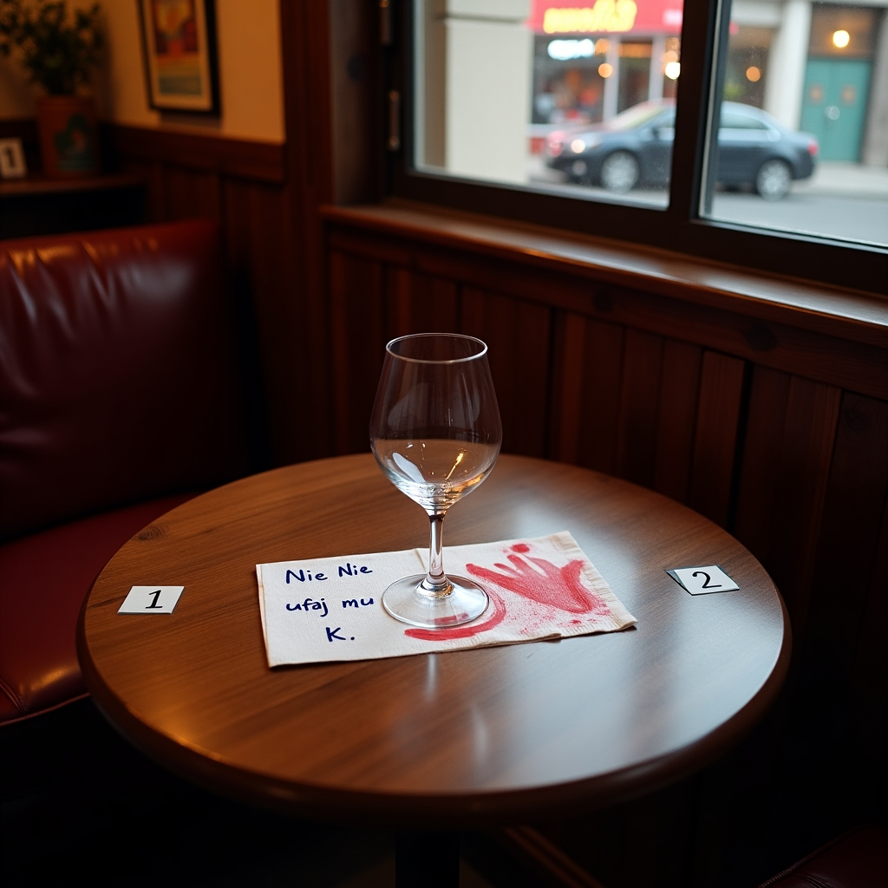
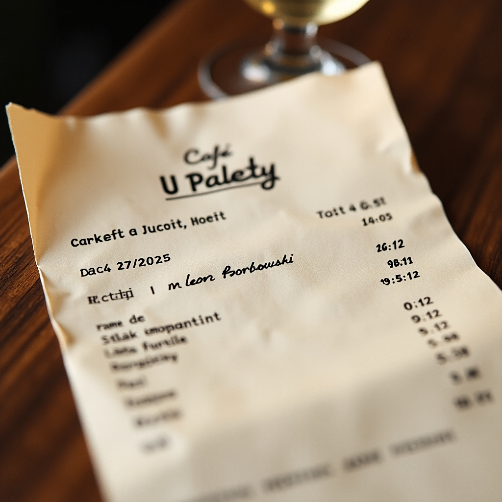
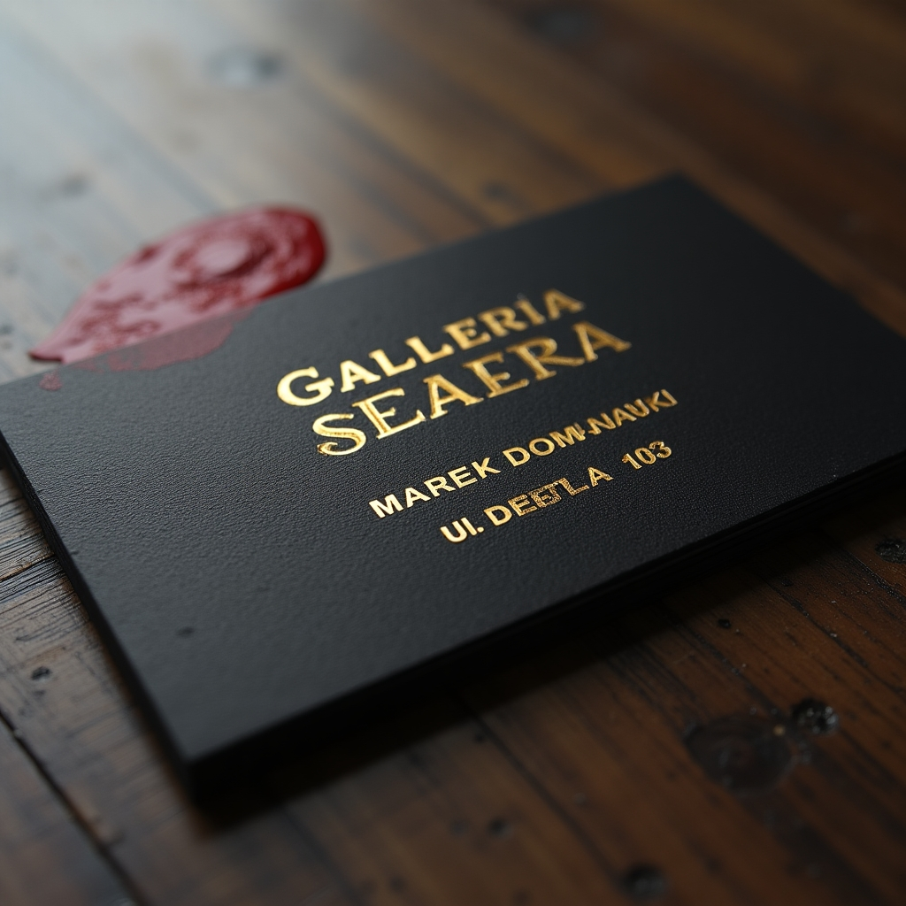

Dane punktu
Lokalizacja:
ul. Karmelicka 22
Czas oględzin: 15.05.2025, godz. 08:45
Funkcjonariusz prowadzący: asp. szt. J. Bielski
Osoba przesłuchana
Jan Rogowski – barman, lat 38.
Potwierdza obecność Leona Borkowskiego w lokalu dnia 14.05 ok. godz. 19:00.
W towarzystwie Klary Rybak (asystentki).
Ok. 19:45 do kawiarni weszła Anna Borkowska, żona zaginionego, po czym natychmiast wyszła.
Około 20:15 pojawił się Marek Domański, prowadzący galerię – doszło do kłótni o pieniądze.
Około 20:30 Leon opuścił lokal sam.
Materiały / dowody zabezpieczone
• Paragon z terminala – transakcja kartą Leona o godz. 19:12.
• Kieliszek po winie – ślady czerwonego pigmentu (prawdopodobnie farba z dłoni).
• Serwetka z notatką: „Nie ufaj mu. – K.” (atrament niebieski).
Załączniki
Zdjęcie stolika z kawiarni (z kieliszkiem i serwetką):

Kopia paragonu z terminala:

Wizytówka galerii „Sfera”:
